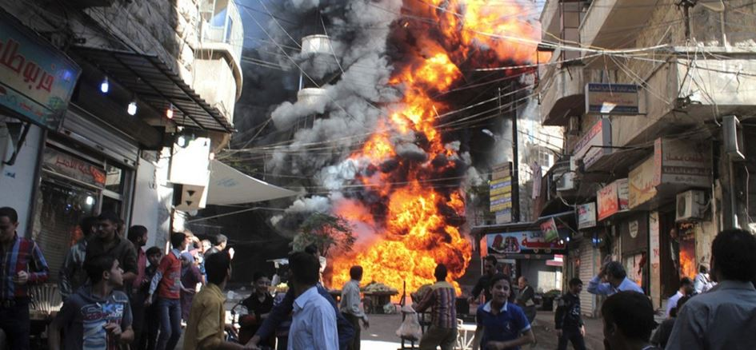
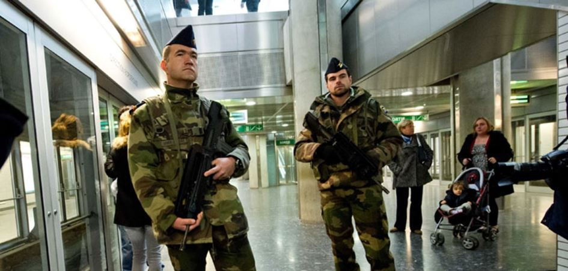
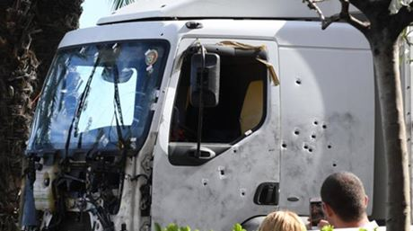
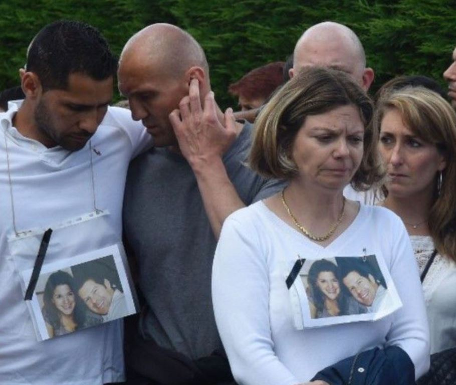
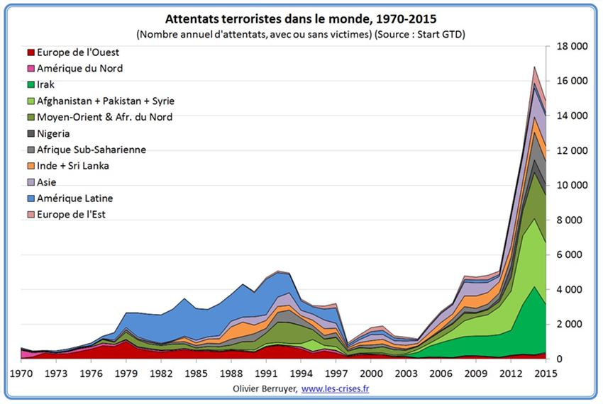
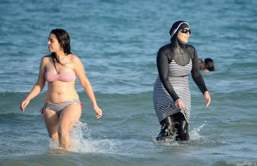
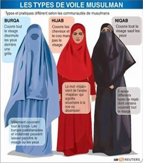
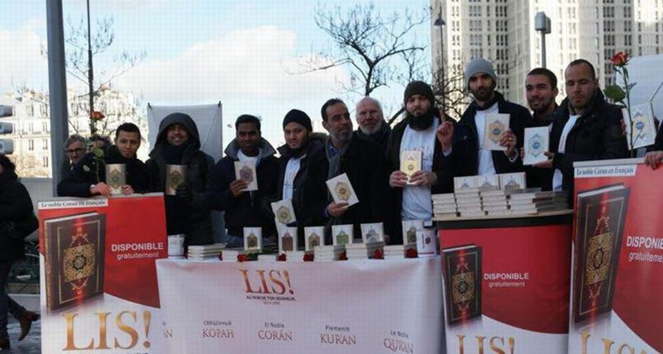
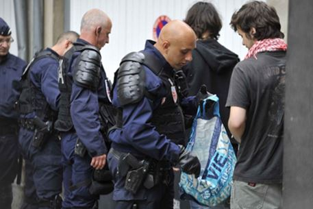

Les évènements de mars 2012 de Toulouse et de Montauban, communément nommés « affaire Mohammed Merah », ont été le point de départ d’une nouvelle ère d’attentats sanglants. Les premières victimes furent des militaires dont un musulman et des enfants juifs. Le symbole est fort. Le terroriste était un franco-algérien de 23 ans.
Le premier réflexe des autorités a été celui de creuser la piste néo-nazi, ce qui démontre l’impréparation des services et un certain relent d’a priori... Par la suite, la diversité des cibles des terroristes islamistes et les méthodes employées ont toutes obéi à une logique parfaitement orchestrée.
Un constat s’impose, notre posture, à l’exception des efforts faits dans le domaine du renseignement, n’est pas à la hauteur de la menace et n’a pas été suffisamment adaptée.
A l’extérieur, la lutte contre l’EI et autres mouvements s’effectue dans une coalition bancale avec des moyens somme toute limités, compte tenu de la complexité des conflits qui en sont la conséquence et qui ne sont pas tous de même nature au Levant comme en Mésopotamie, en Afrique ou en Asie.
Notre diplomatie caractérisée par le manque de clarté et de vision à long terme, ainsi que les erreurs commises dans le choix de nos alliés de l’opposition en Syrie face au pouvoir central (considérés comme modérés), opposés à Bachar el Assad l’alaouite montre ses limites. Quelques-uns se sont alliés à Alep avec les islamistes radicaux ce qui était prévisible, alors qu’à Jarubulus, (nord de la Syrie à la frontière Turque) cette opposition combat désormais les Kurdes aux côtés de l’armée turque. Ce choix de la diplomatie hollandaise et fabusienne, fut dicté plus par une approche « droit de l’hommiste » et plutôt morale que par une véritable analyse. Cela nous a définitivement écartés de toute participation aux négociations actuelles et futures sur le conflit syrien. La Russie en a d’ailleurs tiré les conséquences et fait son choix, elle considère désormais les Etats-Unis comme étant les seuls interlocuteurs dignes de son rang. Du côté français, on pouvait difficilement faire plus mal.
Ainsi, face à de telles organisations islamo-fascistes dont les buts de guerre sont clairement annoncés, nous sommes rarement dans l’initiative. Pire, nous n’avons pas encore mesuré l’étendue et la profondeur de la menace.
Ces organisations terroristes nous imposent sur le terrain (Syrie, Libye, Irak, Sahel...,) un affrontement hybride, 30000 soldats français sont impliqués directement ou indirectement dans les opérations extérieures et sur notre propre territoire nous avons adopté une posture anti-terroriste et un état d’urgence quasi permanent avec 10000 militaires mobilisés.

Patrouille Vigipirate pour des militaires de l’armée de l’air
Porte-avions Charles de Gaulle et Rafale MarineNos forces de police et de gendarmerie sollicitées sur tous les fronts sont au bord du burn-out. Nos armées sont à flux tendu et arrivent tant sur le plan humain que matériel à la limite de la rupture. Un exemple : notre seul et unique porte-avions aujourd’hui engagé au Levant devra rentrer en fin d’année 2016 en cale sèche pour 18 mois démontrant ainsi le sous-dimensionnement chronique de notre outil militaire et le récent marché de vente de Rafale avec l’Inde risque d’étaler encore les livraisons de Rafale prévues pour notre propre Armée de l’air.
Nous sommes à cours de munitions dans certains domaines et la question des stocks et de l’usure des matériels en fin de vie se posent.
Il ne fait aucun doute que le remplacement des matériels de l’armée de terre dans le cadre du plan Scorpion devra être accéléré. Nos manques de voilure tournante et de gros porteurs restent prégnants. La problématique de la faiblesse des effectifs continuera à se poser. Quant à l’engagement quasi constant de nos soldats sur le terrain, il contrarie l’entrainement nécessaire de nos forces. Nous sommes en mesure de faire cet effort nécessaire, il y manque une réelle volonté politique, une adhésion active de l’opinion qui sera d’autant plus forte que l’on prendra le temps de lui expliquer la réalité du danger. Il y manque aussi une réelle politique de défense et de sécurité concertée en Europe, indépendante des intérêts américains.
Il est en conséquence plus que nécessaire de mettre en adéquation nos moyens financiers, humains et matériels avec l’engagement réel de nos armées, 2% du PIB à l’horizon 2025 consacré à la défense n’y suffiront pas. La problématique est la même pour la police, la gendarmerie et la justice sans oublier le système carcéral qui devra être mis à la hauteur des besoins.
Ainsi, ces organisations terroristes qui se sont engagées avec une capacité d’imagination sans limite, tant sur le plan militaire que sur le plan moral, jouent sur nos contradictions et sur les failles de nos démocraties fragiles. Libérées de tout souci d’humanité, s’affranchissant de toutes les contraintes liées au droit international humanitaire, elles sont finalement relativement efficaces compte tenu de leurs moyens réels. Kalachnikov et bombes humaines, couteaux et camions contre porte-avions et avions Rafale pour ne se limiter qu’à ces seuls exemples. Nous sommes au cœur de la problématique des guerres asymétriques et hybrides.
Ainsi, avec des moyens dérisoires, la menace terroriste fixe (dans l’acception militaire du terme) sur notre territoire environ 115000 policiers et soldats. Le rapport efficacité/moyens engagés est donc largement en leur faveur.
La question qui doit se poser à nous est donc la suivante : face à cette menace employons-nous les bonnes méthodes ?
Nous avons mis trop de temps à désigner l’ennemi, car il ne suffit pas de dire « qu’ils nous ont déclarés la guerre » encore faudrait-il avoir le courage de désigner ces « nous » sans omettre ceux qui, tout en étant orchestrés de l’extérieur, se considèrent comme étant « soldats de l’islam» à l’intérieur.
Les attentats les plus meurtriers sont l’œuvre de Français nés pour la plupart en France et ayant fait allégeance à l’EI à al Qaeda, au talibanisme, à une vision politique et fasciste d’un l’Islam dévoyé.
Lors des attentats de Paris du 13 novembre, Ahmad Al-Mohamad âgé de 25 ans avait un passeport syrien, Bilal Hadfi, 20 ans était français, Ismaël Omar Mostefaï, français, Samy Animour, 28 ans, français, Brahim Abdeslam, 31 ans, français, Salah Abdeslam, 26 ans français, né en Belgique. Il est fort probable qu’on leur ait donné la nationalité française sans leur avoir en quelque sorte demandé leur avis... Ils étaient tous connus des services de police.
Né à Msaken, dans la banlieue de Sousse, le 3 janvier 1985, Mohamed Lahouaiej Bouhlel, le tueur au camion assassin de Nice était un ressortissant tunisien, arrivé en France en 2005. Titulaire en 2009 d’une carte de séjour valable dix ans, il avait épousé une niçoise franco-tunisienne avec qui il a eu trois enfants, ce qui lui a permis de travailler en France sans aucun problème.
Les assassins du prêtre de l’église de Saint-Etienne- de Rouvray se nommaient, Adel Kermiche, un Français âgé de 19 ans, connu des services antiterroristes, objet d'une fiche S, qui avait tenté de rallier la Syrie deux fois et était assigné à résidence sous bracelet électronique, qu'il portait d'ailleurs pendant l'attaque. Le second, Abdel Malik Nabil Petitjean, français, était lui aussi fiché pour la même raison.
Yassin Salhi qui avait décapité son patron, selon Bernard Cazeneuve «faisait l’objet d’une attention» pour ses liens avec la mouvance salafiste, mais n’avait aucun casier judiciaire et «n’était pas connu pour être en lien avec des acteurs terroristes».
Dans la terrible affaire du couple de policiers assassinés devant leur enfant de 3 ans, à Magnanville (Yvelines), Larossi Abballa, âgé de 25 ans, qui les a égorgés à leur domicile avec un couteau, puis qui a revendiqué son geste au nom de l’Etat islamique dans une vidéo postée sur Facebook, avait déjà été condamné en 2013 pour ses liens avec une filière d’envoi de combattants dans les zones tribales pakistanaises. A ses côtés figuraient notamment Saad Rajraji et Charaf-Din Aberouz.
Le trio Abballa, Rajraji et Aberouz se connaissait de longue date. Dans le quartier des Musiciens aux Mureaux, où a grandi et vécu Larossi Abballa, le nom de Charaf-Din Aberouz, aujourd’hui âgé de 29 ans, est évocateur.
Aberouz s’était rendu au Pakistan pour rencontrer un cadre d’Al-Qaeda et avait écopé d’une peine de prison de cinq ans, tout comme Rajraji. Aberouz était décrit par certains comme l’émir du groupe. C’est lui qui avait égorgé des lapins lors de leur séance d’entraînement dans des parcs de la région parisienne.
Les terroristes quasiment tous fichés S, nous permettent, après leurs actions accomplies de mort et de terreur, de mesurer à la fois l’efficacité de notre renseignement et l’inefficacité de notre attitude à leur égard. C’est un peu comme jouer au tennis avec une raquette percée, on voit arriver la balle mais on est incapable de la renvoyer.
La menace est donc multidirectionnelle et « multicausal ».
La guerre a été importée et pourtant, ceux qui nous « font la guerre » sont en majorité des Français vivant en France. L’arrivée en masse des migrants qui ne sont pas tous victimes de ces guerres mais aussi de la misère, rajoutent un élément supplémentaire de menace à plus ou moins long terme. Ils n’en sont pas moins les vecteurs futurs d’affrontements prévisibles qui sont les leurs aujourd’hui. Les migrants, qui arrivent en masse et qui proviennent de pays en guerre, personne aujourd’hui n’est capable de dire s’ils ne transposeront pas leurs conflits en Europe, et singulièrement en France. L’Allemagne est au-devant de tensions graves à venir, la forte population d’origine turque, se voit confrontée à une arrivée en masse de migrants, comment réagira-t-elle à l’avenir ? L’Allemagne saura-t-elle gérer à long terme le communautarisme prévisible ? Les fragiles équilibres des sociétés occidentales n’en seront-elles pas affectées ?
Au 1er janvier 2014, 19,6 millions de citoyens de pays tiers et 33,5 millions de personnes nées en dehors de l’Union vivaient dans l’Europe à 28. En chiffres absolus, le plus grand nombre de non-nationaux vivant dans les États membres de l’Union au 1er janvier 2014 se trouvaient en Allemagne (7,0 millions de personnes), au Royaume-Uni (5,0 millions), en Italie (4,9 millions), en Espagne (4,7 millions) et en France (4,2 millions). (origine eurostat statistic explain: Statistiques sur la migration et la population migrante). Ces chiffres sont en extension constante.
A ce constat inquiétant se rajoute nos propres turpitudes, le mot est fort, je pense à notre faiblesse coupable, qui est aussi celle d’un certain nombre de nos dirigeants et d’une intelligentsia mediatico-nocive portant traditionnellement des valeurs dites de gauche. Leur peur panique du « pas d’amalgame » paralyse au point que ceux-ci négligent les signes évidents d’adhésion d’une part sensible des musulmans de France à adhérer à une dérive salafiste et rigoriste, au point où l’on peut se demander si modération est compatible avec islam.
Un récent sondage publié par un média sérieux « le journal du dimanche », indique que parmi les musulmans dits «modérés», 29% estiment que la loi islamique, la charia, est plus importante que la loi de la République. 25% des hommes et 44% des femmes refusent de se rendre dans une piscine mixte. 23% des hommes et 41% des femmes refusent de faire la bise à une femme/un homme. Détails, me direz-vous, « z’on qu’à vivre comme ils veulent ».
Pour certains bisounours, la nouvelle mode du burkini, ne traduirait qu’un nouvel engouement de ces femmes musulmanes pour la baignade et le port du voile de plus en plus commun et répandu une tendance vestimentaire sans connotation radicale. D’ailleurs ce voile s’accompagne parfois chez certaines jeunes filles d’un art de la séduction évident car porter un voile n’empêche pas l’art consommé du make up et du jean slim moulé.
Cette « mode » serait, en toute objectivité, dans une société apaisée et sans terreur, un phénomène amusant et sans danger, sauf que, dans certains lieux, la tendance est de considérer que celles qui ne portent pas le voile sont des putes, ce qui désigne, en effet, toutes celles qui ne suivraient pas la règle. Pire, le viol serait considéré comme une provocation féminine, et donc licite surtout s’il est collectif, sport assez répandu en Egypte, mais pas seulement.
Les propos de certains imans sont d’ailleurs parfaitement clairs à ce sujet. Les mariages forcés, l’abaissement de l’âge légal autorisé pour le mariage des jeunes filles, la soumission de celle-ci aux grands frères, l’hijab, la burka, le niqab, deviennent (au moins pour l’hijab) des accessoires habituels, normalisés et visibles, régulièrement portés et agités comme un drapeau, celui d’un Islam décomplexé et conquérant.
Mais, la charia qui réglemente la totalité de vie du croyant, en passant par le droit de la famille, la vie en société, le respect de la religion musulmane et les sanctions qui vont avec, cette charia, qui recommande l’égorgement des moutons à l’Aïd devrions-nous l’accepter au nom de la tolérance ?
Le rituel de l’égorgement des moutons rappelle malheureusement d’autres égorgements. Les mêmes bobos, qui militent contre la tauromachie, étrangement, ferment les yeux sur la pratique de l’égorgement barbare des moutons. Si vous souhaitez adopter cette pratique dans la rue ou dans votre salle de bain, des vidéos sur YouTube vous donneront la méthode.
Ainsi, nos ennemis qui nous ont « déclarés la guerre », profitant d’un terreau « innocent » et parfois identitaire répandent en toute impunité le poison de leur doxa, infiltrant une certaine jeunesse victimaire, en diffusant avec l’aide des communautés rétrogrades et moyenâgeuses des idées et des codes que les « idiots utiles » (voir mon article à ce sujet) sous prétexte de tolérance, laissent se développer et menacer nos fragiles équilibres culturels et sociaux.
Au-delà de 10% tous les sociologues l’affirment, une minorité devient suffisamment forte pour imposer sa loi à une majorité largement complice ou silencieuse. Nous avons dépassé ce pourcentage.
Je ressens déjà de la part de certains lecteurs, cette réflexion me cataloguant parmi soit les « beaufs » racistes soit parmi les imbéciles n’ayant rien compris à la richesse du multiculturalisme. Ceux-ci nous servent à l’envie, le discours des différentes immigrations précédentes. Sans remonter aux calendes grecques, ils nous citent l’exemple de l’intégration des Russes d’après 1917, des Polonais, des Espagnols, des Italiens, des Portugais, des Asiatiques. Outre le fait que ceux-ci n’ont jamais assassiné de prêtres dans une église, force est de constater que leur culture était somme toute assez proche de la nôtre, asiatique mis à part, mais ils sont plutôt pacifiques, ce serait donc faire insulte à l’intelligence de mes lecteurs de préciser les raisons de leur faculté d’adaptation. Problème de tolérance ou d’appétence à notre culture, peut-être.
Nous voilà donc face à un dilemme, comment faire la guerre à un ennemi qui n’a pas d’Etat, pas de frontières, qui profitent avec intelligence des situations complexes que nous avons nous-même contribués à créer, qui est largement aidé et financé par de généreux donateurs du Moyen-Orient avec lesquels nous continuons de collaborer et de commercer ?
Ces mouvements terroristes, par l’intermédiaire de quelques réseaux actifs, tentent de s’infiltrer dans nos institutions régaliennes, armées, police et justice. Nous avons des exemples, y compris dans la gendarmerie.
L’islam politique possède aussi une arme de destruction massive, le temps et la certitude de la multitude démographique actuelle et à venir. Ils se servent des populations en les maintenant dans une forme d’ignorance et de pauvreté afin de mieux les soumettre et d’en faire des instruments de mort.
En allant sur certains forums islamiques, on peut mesurer à quel point les questions posées à des pseudo-imams par des croyants récemment convertis relèvent de la débilité la plus totale. Cela obéit à une règle simple lobotomiser pour mieux déshumaniser.
Qu’on en s’y trompe pas, ceux qui manipulent, dont les salafistes dits modérés, possèdent une forme d’intelligence redoutable, ils comprennent parfaitement le fonctionnement de nos institutions, et parfois se sont instruits dans nos meilleures universités. Il ne faut jamais sous-estimer nos adversaires.
Alors me direz-vous, c’est foutu ?

Quand les salafistes offrent le Coran en plein Paris…
A la question, faut-il avoir peur de notre situation ? Je répondrais oui. A la question pouvons-nous nous gagner cette guerre ? Je dirais peut-être, à condition de changer notre attitude passive, la résilience ne suffit plus. Le dépôt de gerbe et de nounours sur les lieux de terreur non plus.
Nous devons faire prendre conscience à nos concitoyens de la gravité de la situation.
Des remèdes sont à prendre d’urgence, certains ne seront utiles et efficaces qu’avec le temps.
Commençons par dénoncer les attitudes coupables des « idiots utiles ». Je m’y emploie.
Pour le reste, rien ne se fera sans un rassemblement de tous sur des idées fortes mais simples, ce qui ne veut pas dire simples à mettre en œuvre.
Il est nécessaire de se servir des fichiers S comme un moyen de se protéger et non seulement comme un simple moyen d’information réservé aux seuls services autorisés, Police, Gendarmerie.
Cela passe par la mise hors circulation des individus considérés comme les plus dangereux. Comment et avec quelles garanties ? Après tout, les politiques sont payés pour nous donner des solutions. Qu’ils y travaillent dans le respect de la constitution. Je n’ai pas de solution toute faite.
Il est aussi nécessaire de sensibiliser les juges à leur rôle de défenseur de la société, relâcher des fauves dans la nature relève de l’inconscience coupable. Il faudra bien un jour les responsabiliser d’une façon ou d’une autre. Si nécessaire, il faudra recréer des tribunaux spécialisés et des peines adaptées, voire des rétentions administratives. Il est plus facile en France de faire enfermer sur simple réquisition des malades mentaux que des assassins potentiels.
Il est nécessaire d’unifier certains services de renseignement et de coordonner leurs actions. La Direction du renseignement militaire par exemple peut encore plus contribuer à la lutte anti-terroriste sur le territoire national... Lorsqu’on écoute on tombe parfois sur des communications pouvant intéresser les services anti-terroristes. Or, la DRM n’est pas habilité à tout entendre. Devrait-elle se boucher les oreilles ?
Il est nécessaire de donner à certains officiers et sous-officiers des prérogatives de police judicaire dans le cadre de la mission sentinelle. Un vigile peut ouvrir un sac et palper un individu, pas un militaire ?
Il serait nécessaire par volontariat et sous certaines conditions d’armer certains cadres de réserve.
Il est nécessaire d’organiser les prisons de manière à isoler les radicaux et parallèlement donner les moyens juridiques aux fonctionnaires de reprendre le pouvoir.
Il faut remettre en ordre l’éducation nationale et rétablir l’autorité partout où cela est nécessaire. Ce n’est pas en allongeant la durée de la scolarité qu’on y parviendra.
Il faut lier les allocations familiales à la réalité de la scolarisation et vérifier que les aides sociales atteignent un public concerné. Il faut éradiquer la polygamie déguisée et cachée.
Il faut étudier la réactualisation d’un service national universel d’au minimum 6 mois au profit de tous les corps de l’Etat avec une phase militaire obligatoire pour une partie de la jeunesse à condition qu’elle soit volontaire et remplisse les conditions de sécurité.
Ces mesures, non exhaustives, représentent un coût non négligeable, elles ne peuvent être mises en place sur un simple claquement de doigt, mais elles sont nécessaires face à une menace de déstabilisation profonde de nos sociétés. Simultanément, on ne peut négliger la nécessité d’apporter des réponses sociales au décrochement d’une partie de la jeunesse. La relance de l’économie, la lutte contre le chômage, l’égalité face au marché du travail sont la condition à l’exigence de se conformer aux règles.
A compétence égale, Mohamed doit avoir autant de chance de trouver du travail que Lucien même si il sort d’une banlieue, lesquelles banlieues ne peuvent plus être des zones de non-droit. 30 ans d’abandon de ces zones font que la République devra reconquérir une partie de son territoire abandonnée à l’influence des mafias et désormais quasiment acquis au communautarisme.
Nous possédons en nous les formes les plus avancées des maladies qui nous taraudent, et il faut développer nos anticorps. Nous sommes malades de nos erreurs et de nos faiblesses, ce qui implique qu’il faut avant de désigner du doigt les autres, penser à s’observer soi-même.
Nous devons effectuer une mutation profonde de nos modes de pensées sans nous arc-bouter sur nos valeurs passées mais sans les nier tout en acceptant des valeurs nouvelles.
Respectons notre histoire et abandonnons cette idée fumeuse de la repentance comme si les générations suivantes devaient assumer les erreurs supposées de leurs aïeux.
Affirmons et défendons nos valeurs républicaines, notre laïcité.
Insistons sur le fait que sans devoirs il ne peut y avoir de droits.
Bannissons ceux qui ne veulent pas adhérer aux valeurs communes de notre République, qui insultent le drapeau, qui sifflent la marseillaise. Cela passe par une éducation a minima des symboles de la République.
Revoyons les règles d'attribution de la nationalité liées au seul droit du sol, cela devient un non-sens.
Affirmons la prééminence de la démocratie citoyenne républicaine sur le religieux.
Reconnaissons le fait que nos racines historiques sont judéo-chrétiennes et que par conséquence nos fêtes et les représentations culturelles qui y sont liées sont ancrées dans notre patrimoine commun et devront être protégées et respectées. Cela fait partie de notre ADN. Je suis agnostique et pourtant, je ne conteste pas ce fait.
Nous ne faisons pas partie de l’Islam, et l’Islam nous le rend bien, combien y-a-t-il d’églises tolérées au Maghreb ?
Ceux qui ne veulent pas se plier à ces règles, adhérer à ce que nous sommes, devront en tirer les conséquences et aller vivre ailleurs. Notre culture et notre morale n’est pas négociable.
Il est vrai que nous n’avons pas suffisamment réfléchi à la gestion de l’ère post coloniale. Nous en payons aujourd’hui le prix et la tendance à vouloir imposer notre conception de la démocratie à des peuples qui ne peuvent l’accepter culturellement est une erreur que nous payons très cher.
Il faut donc comprendre ce que nous sommes et nous accepter tels que nous sommes avant de lutter contre ce qu’ils veulent nous imposer.
Non, l’intolérance n’est pas uniquement de notre fait, mais nous n’en sommes pas exempts.
Non, l’immense majorité de la population n’est pas raciste, elle a simplement peur.
Oui, le racisme est universel et il est aussi anti-blanc.
Oui, notre population a du bon sens et elle a conscience que l’ennemi est pugnace, qu’il est implanté sur nos propre territoire et que leurs idées se développent dans un terreau sensible à son discours.
Oui, la religion musulmane est un vecteur ouvert au terrorisme par son incapacité à fixer son dogme, par une organisation non suffisamment hiérarchisée et unifiée, par une inadaptation au monde moderne, par la frilosité des ses membres majoritairement pacifistes et passifs face à au danger qui les menacent. C’est aussi ensemble que nous vaincrons. Coupez vos membres gangrénés, dénoncez-les, virez-les !
Mais, il faut le dire et le répéter sans cesse, 90% des victimes du terrorisme sont des musulmans. En 2015, 2500 attentats terroristes ont touché le monde, moins de 10 en Europe... Il faut que les musulmans de bonne foi luttent avec nous contre les dérives.
Je pourrais conclure sur cette statistique et pourtant elle ne traduit pas la réalité de la situation. Le combat ne fait que commencer il sera long, mais finalement n’est-il pas salutaire ? Face à un ennemi qui a la capacité de dire ce qu’il va faire et de faire ce qu’il dit, nos démocraties molles doivent profondément se remettre en cause tout en luttant... Par la remise en cause de nos valeurs ils vont nous contraindre à évoluer. Nous sommes leur cible, il est temps de nous définir nous-mêmes en nous libérant de ces donneurs de leçons qui brandissent la rhétorique de l’amalgame et de la différence comme un drapeau.
Nous sommes en Occident, il faut s’en convaincre, les seuls porteurs de liberté et de tolérance, il faut en être fier.
Cela vaut la peine de défendre ce trésor. Il ne faut rien céder…
Oui, il faut « terroriser les terroristes » et aller « les chercher si nécessaire jusque dans les chiottes » Vivre dans l’incertitude ne peut être un choix.
La fermeté a aussi une vertu, pour l’avoir oubliée, nos sociétés ont créé la confusion dans les esprits. Faisons la guerre et imposons nos choix. Cette guerre il faut se l’approprier, cessons d’être sous-influence. Il est temps, juste temps.
Partager cette page